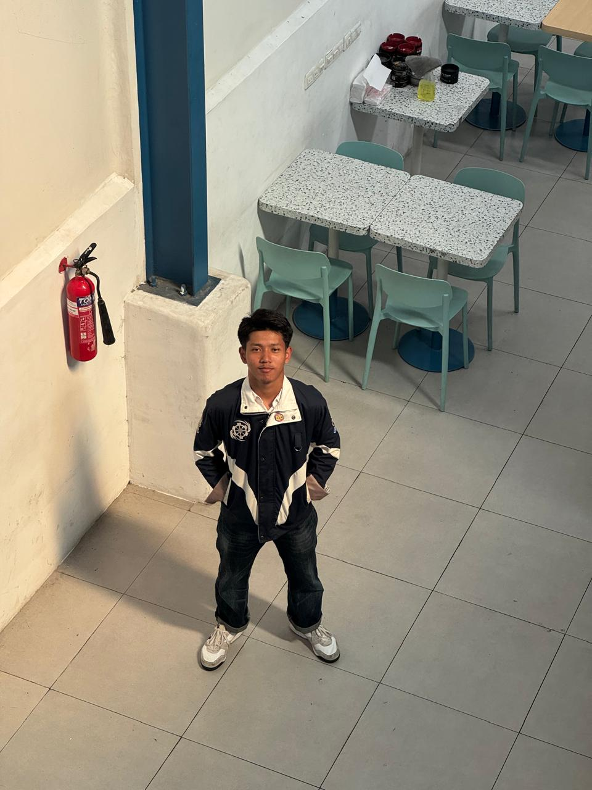
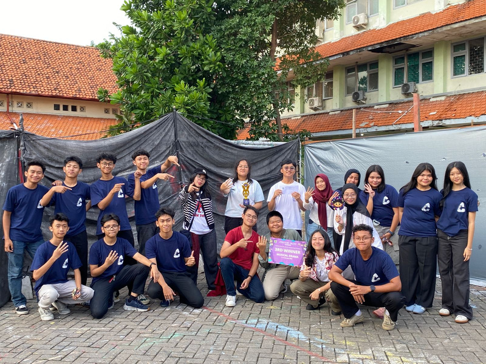
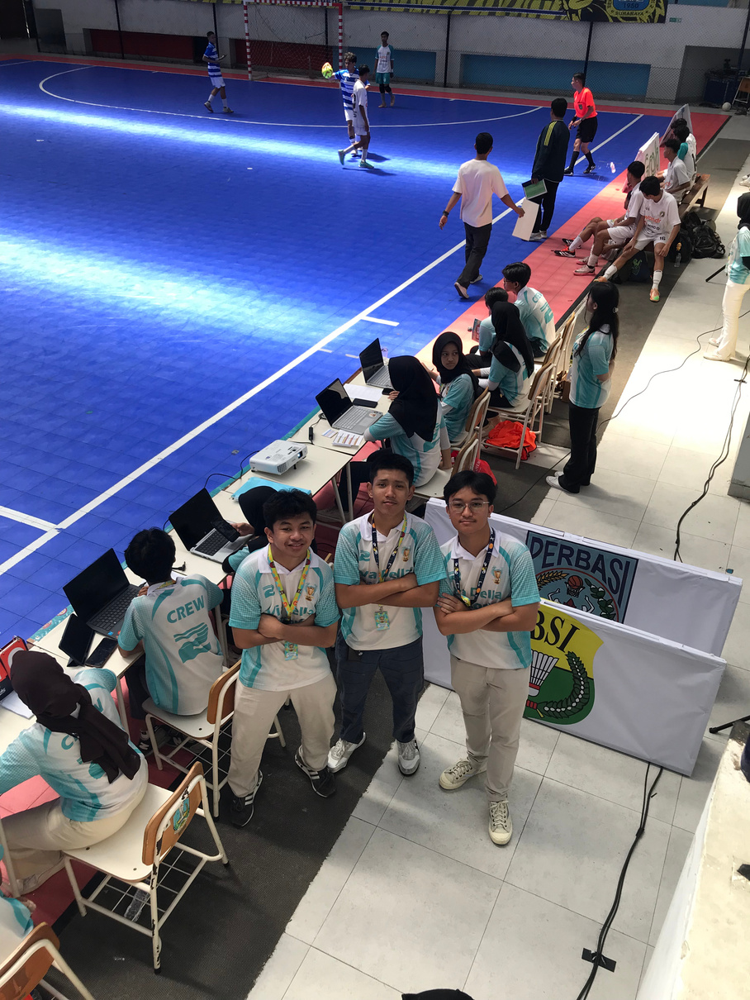

Software & Analytical Mindset
I study Informatics Engineering at ITS and like working out a problem one step at a time.
Surabaya, Indonesia
Informatics Engineering Student at ITS | Tech Enthusiast & Problem Solver
I am a first-year Informatics Engineering student at ITS. I enjoy solving problems step by step and learning new things, and before college I handled sales, logistics, and publication work in several school organizations and events. Right now I am applying to the Bayucaraka ITS research team.

An Informatics Engineering student at Institut Teknologi Sepuluh Nopember (ITS) who is diligent and highly enthusiastic about delving into computer science, software engineering, and technological innovation. Possesses an analytical mindset and persistence in solving complex problems to build efficient digital solutions. Communicative and quick to adapt to new things, with a strong emphasis on effective collaboration in every team effort.
Challenges and obstacles are not reasons to stop, but rather stepping stones for greater growth. I have shaped myself into an adaptable individual ready to learn new things and never one to give up. Exceptional results can only be achieved through high discipline, smart work, and a sense of responsibility. I always strive to provide value and tangible solutions in every opportunity I have. To me, the measure of success lies not just in what is achieved, but in how much we grow. With sincere intentions and concrete action, I am ready to embrace every new challenge the future holds.
I study Informatics Engineering at ITS and like working out a problem one step at a time.
As Sales & Inventory Manager at Olativity I planned the sales strategy, and we reached 100+ sales and Rp5.000.000+ in revenue.
I have been on committees for CELESTE 2K25, SSC, and the SMADA Muslim Competition, handling equipment, matches, and publications.
I adapt to new things quickly and keep my responsibilities even when the schedule is tight.
ENTJ-A
The Commander
The ENTJ-A is the "Commander" personality: assertive, confident, decisive, and possessing great emotional stability. They are natural leaders who remain constantly focused on the future, work efficiency, and achieving ambitious goals. This type is highly resilient under pressure, rarely doubts themselves, and views criticism or failure as lessons for moving forward. However, their intense focus on logic and results can sometimes make them appear harsh or indifferent to the feelings of others.
Students with low neuroticism possess good emotional stability, enabling them to remain calm and level-headed even when facing extremely tight assignment deadlines.
Students with high levels of extraversion greatly enjoy campus social life and feel energized when actively involved in group discussions, organizations, or event committees.
Students with a high level of openness possess immense curiosity and are always enthusiastic about exploring new ideas, complex theories, and unconventional learning methods.
Students with high levels of agreeableness are known as highly cooperative and empathetic individuals who always strive to maintain harmonious relationships within the campus environment.
Students with low conscientiousness tend to approach their studies in a more relaxed and spontaneous manner, and they dislike overly restrictive rules.
Nov 2023 - Jun 2024
Olativity Student Company, Prestasi Junior Indonesia
Aug 2024 - Jul 2025
Sentra Kerohanian Islam
Jan 2025 - Feb 2025
CELESTE 2K25, SMA Negeri 2 Surabaya

Apr 2025 - May 2025
SMADA Sport Competition (SSC), SMA Negeri 2 Surabaya

Sep 2025
SMADA Muslim Competition, SMA Negeri 2 Surabaya
Jul 2026 - Sep 2030 (Expected)
Bachelor of Engineering in Informatics Engineering
Jul 2023 - May 2026
Natural Science Major, Final Grade: 92.10/100.00
My primary goal during my studies at Institut Teknologi Sepuluh Nopember (ITS) is to develop into an individual who is academically competent, actively builds a network, and is ready to make a tangible contribution to society.
As an ITS student, I must set clear, detailed, and focused academic or organizational goals, such as specifically defining a final project topic or selecting a robotics competition I wish to enter.
I need to establish tangible benchmarks for success in my studies at ITS, for instance, by aiming for a minimum GPA of 3.50 this semester or completing three chapters of my thesis draft.
The targets I set must be realistically achievable given my capabilities, the availability of laboratory facilities at ITS, and a balanced approach to managing time between my academic studies and student activity units (UKM).
Every step and additional course I undertake must align with my major at ITS and support my career aspirations after graduating from this "Campus of Struggle."
I must set firm deadlines, such as completing revisions to the lab report within three days or aiming to pass the final defense next June.